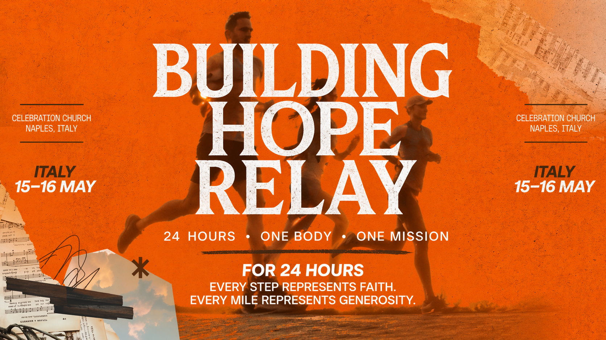

The seats are filled every week at our current building, and we need to expand our walls to make sure everyone has a seat to learn truth and grow in the Word. We need your help to build new walls and minister to those who know Jesus and those who have not yet come to know Christ. Your donation helps bring this mission to life and will impact U.S. personnel and Italians for generations.
Donate NowRelay team members run, walk, jog, and push strollers for 24 continuous hours.
Participants rotate in and out, and everyone moves at their own pace.
During the relay, you will be able to watch the mile count add up live. At the end of the relay, the miles will be verified and uploaded to the fundraising site. The site will then automatically total the funds, and all proceeds will go toward building a new home for Celebration Caserta.
You can support this mission in a few simple but meaningful ways. First, consider giving—whether it’s a one-time donation or a pledge per mile, every contribution helps us create more space for people to hear the Word and grow in community.
You can also participate by joining us at Carney Park from 15–16 May for the 24-hour Building Hope Relay. Come run, walk, spend time with others, and be part of what God is doing.
Finally, you can pray and share. Pray for the lives that will be impacted through this new space, and share this page with others so more people can be part of building something that will last for generations.
If you prefer reading, here’s the story behind this mission and why this fundraiser matters so much to our family and church community.
About two years ago, my family and I moved from the United States to Naples, Italy. At the time, I kept asking myself: why am I here in Naples?
Everything felt unfamiliar. We didn’t know anyone, I had a completely new job with no experience in it, and honestly, none of it made sense. None of this was according to my plan.
Week after week, people at Celebration Caserta surrounded us with love—both at church and in everyday life. Acquaintances became friends, and friends became mentors.
Then it hit me: I’m here to be an active part of the Church. Just as others were pouring into me on Sundays and throughout the week, I was here to serve others too.
My perspective changed. It was no longer about my job, my title, or how being stationed in Naples would impact my career. I am here to serve others at church and be a light for Christ in the workplace.
All of this happened because there was an open seat, and because I was surrounded by the active body of Christ. Celebration Caserta has shaped my life in powerful ways, and I want others to experience that too.
But we are running out of seats. We want to make room for more people to hear the truth, grow in faith, and be surrounded by the church just as I have been.
That’s why we’re inviting others to join the Building Hope Relay. From 15 May to 16 May at Carney Park, we’ll run, walk, eat, pray, and spend focused family time together for 24 hours to help build a new home for Celebration Caserta.
Your support helps create more room for more chairs, so no one who needs a place to belong is left behind because there wasn’t enough space. Your help will impact lives for years to come.